건설재료시험기사 (2018-04-28 기출문제)
1과목: 콘크리트공학
1. 콘크리트의 설계기준 압축강도가 40MPa이고, 30회 이상의 시험실적으로부터 구한 압축강도의 표준편차가 5MPa 이라면 배합강도는?
- 45.2MPa
- 46.7MPa
- 47.7MPa
- 48.2MPa
(정답률: 74%)

2. 콘크리트의 건조수축량에 관한 다음 설명 중 옳은 것은?
- 단위 굵은 골재량이 많을수록 건조수축량은 크다.
- 분말고가 큰 시멘트일수록 건조수축량은 크다.
- 습도가 낮고 온도가 높을수록 건조수축량은 작다.
- 물-결합재비가 동일할 경우 단위수량의 차이에 따라 건조수축량이 달라지지는 않는다.
(정답률: 71%)
3. 콘크리트의 압축강도를 시험하여 거푸집널을 해체하고자 할 때, 아래와 같은 조건에서 콘크리트 압축강도는 얼마 이상인 경우 해체가 가능한가?
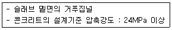
- 5MPa 이상
- 10MPa 이상
- 14MPa 이상
- 16MPa 이상
(정답률: 74%)
4. 굳지 않은 콘크리트의 성질에 대한 설명으로 옳지 않은 것은?
- 단위 시멘트량이 큰 콘크리트일수록 성형성이 좋다.
- 온도가 높을수록 슬럼프는 감소된다.
- 둥근 입형의 잔골재를 사용한 콘크리트는 모가진 부순 모래를 사용한 것에 비해 워커빌리티가 나쁘다.
- 일반적으로 플라이애쉬를 사용한 콘크리트는 워커빌리티가 개선된다.
(정답률: 64%)
5. 프리플레이스트 콘크리트에 대한 일반적인 설명으로 틀린 것은?
- 잔골재의 조립률은 1.4~2.2의 범위로 한다.
- 굵은 골재의 최소 치수는 15mm이상으로 하여야 한다.
- 대규모 프리플레이스트 콘크리트를 대상으로 할 경우 굵은 골재의 최소 치수를 작게 하는 것이 좋다.
- 굵은 골재의 최대 치수와 최소 치수와의 차이를 적게하면 굵은 골재의 실적률이 낮아지고 주입모르타르의 소요량이 많아진다.
(정답률: 64%)
6. 경화한 콘크리트는 건전부와 균열부에서 측정되는 초음파 전파시간이 다르게 되어 전파속도가 다르다. 이러한 전파속도의 차이를 분석함으로써 균열의 깊이를 평가할 수 있는 비파괴 시험방법은?
- Tc-To법
- 전자파 레이더법
- 분극저항법
- RC-Radar법
(정답률: 74%)
7. 서중콘크리트에 대한 설명으로 틀린 것은?
- 콘크리트를 타설할 때의 콘크리트의 온도는 35℃이하이어야 한다.
- 콘크리트는 비빈 후 즉시 타설하여야 하며, 일반적인 대책을 강구한 경우라도 2시간 이내에 타설하여야 한다.
- 일반적으로는 기온 10℃의 상승에 대하여 단위수량은 2~5%증가하므로 소요의 압축강도를 확보하기 위해서는 단위수량에 비례하여 단위 시멘트량의 증가를 검토하여야 한다.
- 서중콘크리트의 배합온도는 낮게 관리하여야 한다.
(정답률: 77%)
8. 프리텐션 방식의 프리스트레스트 콘크리트에서 프리스트레싱을 할 때의 콘크리트 압축강도는 얼마 이상이어야 하는가?
- 21Mpa
- 24Mpa
- 27Mpa
- 30Mpa
(정답률: 78%)
9. 콘크리트 타설 및 다지기 작업 시 주의해야 할 사항으로 틀린 것은?
- 연직 시공일 때 슈트 등의 배출구와 타설면까지의 높이는 1.5m이하를 원칙으로 한다.
- 내부진동기를 사용하여 진동가지기를 할 경우 삽입간격은 일반적으로 1m이하로 하는 것이 좋다.
- 내부진동기를 이용하여 진동다지기를 할 경우 내부진동기를 하층의 콘크리트 속으로 0.1m정도 찔러 넣는다.
- 타설한 콘크리트를 거푸집 안에서 횡방향으로 이동시켜서는 안 된다.
(정답률: 78%)
10. 급속 동결 융해에 대한 콘크리트의 저항 시험(KS F 2456)에서 동결 융해 사이클에 대한 설명으로 틀린 것은?
- 동결 융해 1사이클은 공시체 중심부의 온도를 원칙으로 하며 원칙적으로 4℃에서 -18℃로 떨어지고, 다음에 -18℃에서 4℃로 상승되는 것으로 한다.
- 동결 융해 1사이클의 소요 시간은 2시간이상, 4시간 이하로 한다.
- 공시체의 중심과 표면의 온도차는 항상 28℃를 초과해서는 안된다.
- 동결 융해에서 상태가 바뀌는 순간의 시간이 5분을 초과해서는 안된다.
(정답률: 60%)
11. 경량골재콘크리트에 대한 일반적인 설명으로 틀린 것은?
- 경량골재는 일반골재에 비하여 물을 흡수하기 쉬우므로 충분히 물을 흡수시킨 상태로 사용하여야 한다.
- 경량골재콘크리트는 가볍기 때문에 슬럼프가 작게 나오는 경향이 있다.
- 운반 중의 재료분리는 보통콘크리트와는 반대로 골재가 위로 떠오르고 시멘트페이스트가 가라앉는 경향이 있다.
- 경량콘크리트는 가볍기 때문에 재료분리가 발생하기 쉬워 다짐 시 진동기를 사용하지 않는 것이 좋다.
(정답률: 72%)
12. 콘크리트 재료의 계량 및 비비기에 대한 설명으로 틀린 것은?
- 계량은 현장 배합에 의해 실시하는 것으로 한다.
- 혼화재의 계량 허용오차는 ±2%이다.
- 강제식 믹서를 사용하여 비비기를 할 경우 비비기 시간은 최소 1분 30초 이상을 표준으로 한다.
- 비비기는 미리 정해둔 비비기 시간의 3배 이상 계속하지 않아야 한다.
(정답률: 72%)
13. 매스콘크리트의 균열 발생검토에 쓰이는 것으로 콘크리트의 인장강도를 온도에 의한 인장응력으로 나눈 값을 무엇이하고 하는가?
- 성숙도
- 온도균열지수
- 크리프
- 동탄성계수
(정답률: 79%)
14. 콘크리트에 섬유를 보강하면 섬유의 에너지 흡수능력으로 인해 콘크리트의 여러 역학적 성질이 개선되는데 이들 중 가장 크게 개선되는 성질은?
- 경도
- 인성
- 전성
- 연성
(정답률: 64%)
15. 시방배합 결과 콘크리트 1m3에 사용되는 물은 180kg, 시멘트를 390kg, 잔골재는 700kg, 굵은골재는 1100kg이었다. 현장 골재의 상태가 아래의 표와 같을 때 현장배합에 필요한 단위 굵은골재량은?
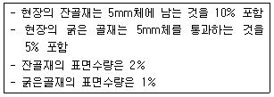
- 1060kg
- 1071kg
- 1082kg
- 1093kg
(정답률: 47%)
16. 프리스트레스트 콘크리트의 그라우트에 대한 설명으로 틀린 것은?
- 팽창성 그라우트에서 팽창률은 0~10%를 표준으로 하여야 한다.
- 블리딩률은 0%를 표준으로 한다.
- 부재 콘크리트와 긴장재를 일체화 시키는 부착강도는 재령 28일의 압축강도로 대신하여 설정 할 수 있다.
- 물-결합재비는 55%이하로 한다.
(정답률: 49%)
17. 콘크리트의 고압증기양생에 대한 설명으로 틀린 것은?
- 고압증기양생한 콘크리트는 보통양생한것에 비해 철근과의 부착강도가 약 2배 정도로 커진다.
- 고압증기양생은 용해성의 유리석회가 없기 때문에 백태현상을 감소시킨다.
- 고압증기양생을 실시한 콘크리트의 크리프는 감소된다.
- 고압증기양생한 콘크리트의 수축률은 크게 감소된다.
(정답률: 81%)
18. 다음 관리도의 종류에서 정규분포이론이 적용되지 않는 것은?
- P 관리도(불량률 관리도)
- x 관리도(측정값 자체의 관리도)
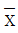
- R 관리도(평균값과 범위의 관리도)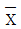
- σ 관리도(평균값과 표준편차의 관리도)
(정답률: 78%)
19. 콘크리트의 배합설계에 대한 설명으로 틀린 것은?
- 콘크리트를 경제적으로 제조한다는 관점에서 될 수 있는 대로 최대 치수가 작은 굵은 골재를 사용하는 것이 일반적으로 유리하다.
- 단위 시멘트량은 원칙적으로 단위수량과 물-결합재비로부터 정하여야 한다.
- 잔골재율은 소요의 워커빌리티를 얻을 수 있는 범위내에서 단위수량이 최소가 되도록 시험에 의해 정하여야 한다.
- 유동화 콘크리트의 결루 유동화 후 콘크리트의 워커빌리티를 고려하여 잔공재율을 결정할 필요가 있다.
(정답률: 72%)
20. 콘크리트의 초기균열 중 콘크리트 표면수의 증발속도가 블리딩 속도보다 빠른 경우와 같이 급속한 수분 증발이 일어나는 경우 발생하기 쉬운 균열은?
- 거푸집 변형에 의한 균열
- 침하수축균열
- 소성수축균열
- 건조수축균열
(정답률: 54%)
2과목: 건설시공 및 관리
21. 댐의 기초암반의 변형성이나 강도를 개량하여 균일성을 주기 위하여 기초지반에 걸쳐 격자형으로 그라우팅을 하는 것은?
- 압밀(consoildation)
- 커튼(curtain)
- 블랭킷(blanket)
- 림(rim) 그라우팅
(정답률: 65%)
22. 콘크리트 포장 이음부의 시공과 관계가 가장 적은 것은?
- 슬립폼(slip form)
- 타이바(tie bar)
- 다우월바(dowel dar)
- 프라이머(Peimer)
(정답률: 71%)
23. 일반적인 품질관리순서 중 가장 먼저 결정해야 할 것은?
- 품질 조사 및 품질 검사
- 품질 표준 결정
- 품질 특성 결정
- 관리도의 작성
(정답률: 61%)
24. 배수로의 설계 시 유의해야 할 사항으로 틀린 것은?
- 집수면적이 커야 한다.
- 집수지역은 다소 깊어야 한다.
- 배수 단면은 하류로 갈수록 커야 한다.
- 유하속도가 느려야 한다.
(정답률: 65%)
25. 콘크리트 말뚝이나 선단폐쇄 강관말뚝과 같은 타입말뚝은 흙을 횡방향으로 이동시켜서 주위의 흙을 다져주는 효과가 있다. 이러한 말뚝을 무엇이라고 하는가?
- 배토말뚝
- 지지말뚝
- 주동말뚝
- 수동말뚝
(정답률: 60%)
26. 다음과 같은 특징을 가진 굴착장비의 명칭은?
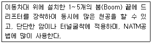
- Stoper
- Jumbo drill
- Rock drill
- Sinker
(정답률: 76%)
27. 아래의 표에서 설명하는 교량은?
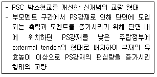
- 현수교
- Extradosed교
- 사장교
- Warren Truss교
(정답률: 70%)
28. 순폭(殉爆)에 대한 설명으로 옳은 것은?
- 순폭(殉爆)이란 폭파가 완전히 이루어지는 것을 말한다.
- 한 약포 폭발에 감응되어 인접 약포가 폭발되는 것을 순폭(殉爆)이라 한다.
- 폭파계수, 최소저항선, 천공경 등을 결정하여 표준 장악량을 결정하기 위해 실시하는 것은 순폭(殉爆)이라 한다.
- 누두지수(n)가 1이 되는 경우는 폭약이 가장 유효하게 사용되었음을 나타내며, 이 때의 폭발을 순폭(殉爆)이라 한다.
(정답률: 51%)
29. 흙을 자연 상태로 쌓아 올렸을 때 급경사면은 점차로 붕괴하여 안정된 비탈면이 되는데 이 때 형성되는 각도를 무엇이라 하는가?
- 흙의 자연각
- 흙의 경사각
- 흙의 안정각
- 흙의 안식각
(정답률: 72%)
30. 버킷용량이 0.8m3, 버킷계수가 0.9인 백호를 사용하여 12t 덤프드럭 1대에 흙을 적재하고자 할 때 필요한 적재시간은 얼마인가? (단, 흙의 단위무게(γt)=1.6t/m3, L=1.2, 백호의 싸이클타임(Cm)=30초, 백호의 작업효율=0.75)
- 7.13분
- 7.94분
- 8.67분
- 9.51분
(정답률: 57%)
31. 교대 날개벽의 가장 주된 역할은?
- 미관의 향상
- 교대하중의 부담 감소
- 교대 배면 성토의 보호 및 세굴방지
- 유량을 경감시켜 토사의 퇴적을 촉진시켜 교대의 보호증진
(정답률: 81%)
32. 다음 건설기계 중 굴착과 싣기를 같이 할 수 있는 기계가 아닌 것은?
- 백호
- 트랙터 쇼벨
- 준설선(dredger)
- 리퍼(ripper)
(정답률: 60%)
33. 0.6m3의 백호(back hoe) 한 대를 사용하여 20000m3의 기초 굴착을 할 때 굴착일수는? (단, 백호의 사이클타임 : 26 sec, 디퍼 계수 : 1.0, 토량환산계수(f) : 0.8, 작업효율(E) : 0.6 1일 운전시간 8시간)
- 63일
- 68일
- 72일
- 80일
(정답률: 54%)
34. 말뚝이 30개로 형성된 군항 기초에서 말뚝의 효율은 0.75이다. 단항으로 계산할 때 말뚝 한 개의 허용 지지력이 20t이라면 군항의 허용지지력은?
- 450t
- 220t
- 500t
- 350t
(정답률: 67%)
35. 공사 기간의 단축을 비용경사(cost slope)를 고려해야 한다. 다음 표를 보고 비용 경사를 구하면?
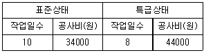
- 1000원
- 2000원
- 5000원
- 10000원
(정답률: 76%)
36. 토적곡선(Mass curve)에 대한 설명 중 틀린 것은?
- 동일 단면 내의 절토량, 성토량은 토적곡선에서 구할 수 있다.
- 평균운반거리는 전토량 2등분 선상의 점을 통하는 평행선과 나란한 수평거리로 표시한다.
- 절토구간의 토적곡선은 상승곡선이 되고, 성토구간의 토적곡선은 하향곡선이 된다.
- 곡선의 최대값을 나타내는 점을 절토에서 성토로 옳기는 점이다.
(정답률: 64%)
37. 도로주행 중 노면의 한 개소를 차량이 집중 통과하여 표면의 재료가 마모되고 유동을 일으켜서 노면이 얕게 패인자국을 무엇이라고 하는가?
- 플러시(Flush)
- 러팅(Rutting)
- 블로업(Blow up)
- 블랙베이스(Black base)
(정답률: 80%)
38. 공기 케이슨 공법에 관한 설명으로 틀린 것은?
- 노동조건의 제약을 받기 때문에 노무비가 과대하다.
- 토질을 확인 할 수 있고 정확한 지지력 측정이 가능하다.
- 쇼규모 공사 또는 심도가 얕은 곳에는 비경제적이다.
- 배수를 하면서 시공하므로 지하수위 변화를 주어 인접지반에 침하를 일으킨다.
(정답률: 39%)
39. 대선 위에 쇼벨계 굴착기인 클렘셸을 선박에 장치한 준설선인 그래브 준설선의 특징에 대한 설명으로 틀린 것은?
- 소규모 및 협소한 장소에 적합하다.
- 굳은 토질의 준설에 적합하다.
- 준설능력이 작다.
- 준설깊이를 용이하게 조절할 수 있다.
(정답률: 49%)
40. 지하층을 구축하면서 동시에 지상층도 시골이 가능한 역타공법(Top-down공법)이 현장에서 많이 사용된다. 역타공법의 특징으로 틀린 것은?
- 인접건물이나 인접지대에 영향을 주지 않는 지하굴착 공법이다.
- 대지의 활용도를 극대화할 수 있으므로 도심지에서 유리한 공법이다.
- 지하층 슬래브와 지하벽체 및 기초 말뚝기등과의 연결작업이 쉽다.
- 지하주벽을 먼저 시공하므로 지하수차단이 쉽다.
(정답률: 66%)
3과목: 건설재료 및 시험
41. 로스앤젤레스 시험기에 의한 굵은 골재의 마모시험 결과가 아래와 같을 때 마모감량은?
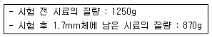
- 28.3%
- 28.9%
- 29.7%
- 30.4%
(정답률: 60%)
42. 시멘트의 분말도가 높을 경우 콘크리트에 미치는 영향에 대한 설명으로 틀린 것은?
- 응결이 빠르다.
- 발열량이 적다.
- 초기강도가 커진다.
- 시멘트의 워커빌리티가 좋아진다.
(정답률: 62%)
43. 목재의 장점에 대한 설명으로 틀린 것은?
- 무게가 가벼워서 취급이나 운반이 쉽다.
- 내구성은 석재나 콘크리트보다는 떨어지나 방부처리를 하면 상당한 내구성을 갖는다.
- 가공이 용이하고 외관이 아름답다.
- 재질이나 강도가 균일하다.
(정답률: 70%)
44. 아스팔트 품질에 있어 공용성 등급(Performance Grade)을 KS등에 도입하여 적용하고 있다. 아래 표와 같은 표기에서 “76”의 의미로 옳은 것은?
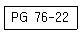
- 7일 간의 평균 최고 포장 설계 온도
- 22일 간의 평균 최고 포장 설계 온도
- 최저 포장 설계 온도
- 연화점
(정답률: 65%)
45. 혼합시멘트 및 특수시멘트에 관한 설명으로 틀린 것은?
- 고로 시멘트는 초기강도는 작으나 장기강도는 보통 포틀랜드 시멘트와 비슷하거나 약간 크다.
- 플라이애시 시멘트는 해수(海水)에 대한 저항성이 크고, 수밀성이 좋아 수리구조물에 유리하다.
- 알루미나 시멘트는 조기강도가 작고, 발열량이 적기 때문에 여름공사(署中工事)에 적합하다.
- 초속경(秒速硬) 시멘트는 응결시간이 짧고 경화 시 발열이 큰 특징을 가지고 있다.
(정답률: 66%)
46. 역청재료의 침입도 시험에서 중량 100g의 표준침이 5초 동안에 5mm 관입했다면 이 재료의 침입도는 얼마인가?
- 100
- 50
- 25
- 5
(정답률: 67%)
47. 스트레이트 아스팔트에 대한 설명으로 틀린 것은?
- 블론 아스팔트에 비해 감온성이 작다.
- 블론 아스팔트에 비해 신장성이 우수하다.
- 블론 아스팔트에 비해 탄력성이 작다.
- 주요 용도는 도로, 활주로, 댐 등의 포장용 혼합물의 결합재이다.
(정답률: 62%)
48. 콘크리트용 혼화재로 실리카 퓸(Silica fume)을 사용한 경우 그 효과에 대한 설명으로 잘못된 것은?
- 콘크리트의 재료분리 저항성, 수밀성이 향상된다.
- 알칼리 골재반응의 억제효과가 있다.
- 내화학약품성이 향상된다.
- 단위수량과 건조수축이 감소된다.
(정답률: 66%)
49. 다음 폭약 중 아래의 표에서 설명하는 것은?
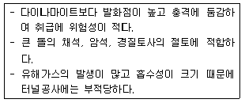
- 칼릿
- 니트로글리세린
- 질산암모늄계 폭약
- 무연화약
(정답률: 64%)
50. 다음 중 기상작용에 대한 골재의 저항성을 평가하기 위한 시험은?
- 로스앤젤레스 마모 시험
- 밀도 및 흡수율 시험
- 안정성 시험
- 유해물 함량 시험
(정답률: 55%)
51. 콘크리트용 혼화재료에 대한 설명으로 틀린 것은?
- 발청제는 철근이나 PC강선이 부식하는 것을 방지하기 위해 사용한다.
- 급결제를 사용한 콘크리트는 초기 28일의 강도증진은 매우 크고, 장기강도의 증진 또한 큰 경우가 많다.
- 지연제는 시멘트의 수화반응을 늦춰 응결시간을 길게 할 목적으로 사용되는 혼화제이다.
- 촉진제는 보통 염화칼슘을 사용하며 일반적인 사용량은 시멘트 질량에 대하여 2%이하를 사용한다.
(정답률: 57%)
52. 철근 콘크리트 구조물에 사용할 굵은 골재에서 유해물인 점토덩어리의 함유량이 0.18%이었다면, 연한 석편의 함유량은 최대 얼마 이하이어야 하는가?
- 2.82%
- 3.82%
- 4.82%
- 5.82%
(정답률: 47%)
53. 콘크리트용 응결촉진제에 대한 설명으로 틀린 것은?
- 조기강도를 증가시키지만 사용량이 과다하면 순결 또는 강도저하를 나타낼 수 있다.
- 한중콘크리트에 있어서 동결이 시작되기 전에 미리 동결에 저항하기 위한 강도를 조기에 얻기 위한 용도로 많이 사용된다.
- 염화칼슘을 주성분으로 한 촉진제는 콘크리트의 황산염에 대한 저항성을 증가시키는 경향을 나타낸다.
- PSC강재에 접촉하면 부식 또는 녹이 슬기 쉽다.
(정답률: 68%)
54. 골재의 조립률이 6.6인 골재와 5.8인 골재 2종류의 굵은 골재를 중량비 8:2로 혼합한 혼합 골재의 조립률로 옳은 것은?
- 6.24
- 6.34
- 6.44
- 6.54
(정답률: 62%)
55. 재료의 성질 중 작은 변형에도 파괴하는 성질을 무엇이라 하는가?
- 소성
- 탄성
- 연성
- 취성
(정답률: 72%)
56. 재료에 외력을 작용시키고 변형을 억제하면 시간이 경과함에 따라 재료의 응력이 감소하는 현상을 무엇이라 하는가?
- 탄성
- 취성
- 크리프
- 릴랙세이션
(정답률: 60%)
57. 암석의 분류방법 중 보편적으로 사용되며 화성암, 퇴적암, 변성암으로 분류하는 방법은 무엇인가?
- 화학성분에 의한 방법
- 성인에 의한 방법
- 산출상태에 의한 방법
- 조직구조에 의한 방법
(정답률: 65%)
58. 시멘트 비중시험(KS L 5110)의 정밀도 및 편차 규정에 대한 설명으로 옳은 것은?
- 동일 시험자가 동일 재료에 대하여 2회 측정한 결과가 ±0.03 이내이어야 한다.
- 동일 시험자가 동일 재료에 대하여 3회 측정한 결과가 ±0.⑤ 이내이어야 한다.
- 서로 다른 시험자가 동일 재료에 대하여 2회 측정한 결과가 ±0.03 이내이어야 한다.
- 서로 다른 시험자가 서로 다른 재료에 대하여 3회 측정한 결과가 ±0.⑤ 이내이어야 한다.
(정답률: 47%)
59. 다음에서 설명하는 토목섬유의 종류와 그 주요기능으로 옳은 것은?
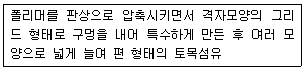
- 지오그리드-보강, 분리
- 지오네트-배수, 보강
- 지오매트-배수, 필터
- 지오네트-보강, 분리
(정답률: 67%)
60. 석재의 성질에 대한 일반적인 설명으로 틀린 것은?
- 석재는 모든 강도 가운데 인장강도가 최대이다.
- 석재의 흡수율은 풍화, 파괴, 내구성과 크게 관계가 있다.
- 석재의 밀도는 조성성분의 성질, 비율, 조직속의 공극 등에 따라 다르다.
- 석재는 조암광물의 팽창계수가 서로 다르기 때문에 고온에서는 파괴된다.
(정답률: 64%)
4과목: 토질 및 기초
61. 어떤 지반에 대한 토질시험결과 점착력 c=0.50kg/cm2, 흙의 단위중량 γ=2.0t/m3이었다. 그 지반에 연직으로 7m를 굴착했다면 안전율은 얼마인가? (단, ø=0이다.)
- 1.43
- 1.51
- 2.11
- 2.61
(정답률: 39%)
62. 다음 그림과 같이 점토질 지반에 연속기초가 설치되어 있다. Rerzaghi 공식에 의한 이 기초의 허용 지지력은? (단, ø=0이며, 폭(B)=2m, Nc=5.14, Nq=1.0, Nγ=0, 안전율 Fs=3이다.)
- 6.4t/m2
- 13.5t/m2
- 18.5t/m2
- 40.49t/m2
(정답률: 47%)
63. 무게 3ton인 단동식 증기 hammer를 사용하여 낙하고 1.2m에서 pile을 타입할 때 1회 타격당 최종 침하량이 2cm이었다. Engineering News공식을 사용하여 허용 지지력을 구하면 얼마인가?
- 13.3t
- 26.7t
- 80.8t
- 160t
(정답률: 37%)
64. 수조에 상반향의 침투에 의한 수두를 측정한 결과, 그림과 같이 나타났다. 이 때, 수조 속에 있는 흙에 발생하는 침투력을 나타낸 식은? (단, 시료의 단면적은 A, 시료의 길이는 L, 시료의 포화단위중량은 γsat, 물의 단위중량은 γw이다.)
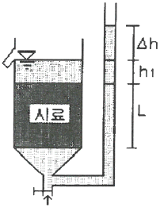
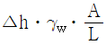
- △hㆍγwㆍA
- △hㆍγsatㆍA
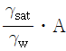
(정답률: 46%)
65. 점토 지반의 강성 기초의 접지압 분포에 대한 설명으로 옳은 것은?
- 기초 모서리 부분에서 최대응력이 발생한다.
- 기초 중앙 부분에서 최대응력이 발생한다.
- 기초 밑면의 응력은 어느 부분에나 동일하다.
- 기초 밑면에서의 응력은 토질에 관계없이 일정하다.
(정답률: 63%)
66. 어떤 시료에 대해 액압 1.0kg/cm2를 가해 각 수직변위에 대응하는 수직하중을 측정한 결과가 아래 표와 같다. 파괴시의 축차응력은? (단, 피스톤의 지름과 시료의 지름은 같다고 보며, 시료의 단면적 Ao=18cm2, 길이 L=14cm 이다.)
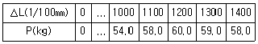
- 3.⑤kg/cm2
- 2.55kg/cm2
- 2.⑤kg/cm2
- 1.55kg/cm2
(정답률: 26%)
67. 다음 재료채위에 사용되는 시료기(sampler) 중 불교란시료 재취에 사용되는 것만 고른 것으로 옳은 것은?
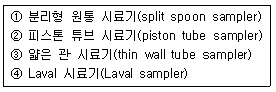
- ①, ②, ③
- ①, ②, ④
- ①, ③, ④
- ②, ③, ④
(정답률: 52%)
68. 아래 그림과 같이 3개의 지층으로 이루어진 지반에서 수직방향으로 등가투수계수는?
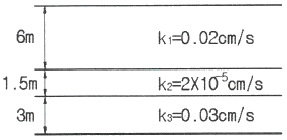
- 2.516×10-6cm/s
- 1.274×10-5cm/s
- 1.393×10-4cm/s
- 2.0×10-2cm/s
(정답률: 50%)
69. 포화단위중량이 1.8t/m3인 흙에서의 한계동수경사는 얼마인가?
- 0.8
- 1.0
- 1.8
- 2.0
(정답률: 47%)
70. 점토의 다짐에서 최적함수비보다 함수비가 적은 건조축 및 함수비가 많은 습윤측에 대한 설명으로 옳지 않은 것은?
- 다짐의 목적에 따라 습윤 및 건조측으로 구분하여 다짐계획을 세우는 것이 효과적이다.
- 흙의 강도 증가가 목적인 경우, 건조측에서 다지는 것이 유리하다.
- 습윤측에서 다지는 경우, 투수계수 증가 효과가 크다.
- 다짐의 목적이 차수를 목적으로 하는 경우, 습윤측에서 다지는 것이 유리하다.
(정답률: 49%)
71. 노건조한 흙 시료의 부피가 1000cm3, 무게가 1700g, 비중이 2.65 이라면 간극비는?
- 0.71
- 0.43
- 0.65
- 0.56
(정답률: 36%)
72. 전단마찰각이 25°인 점토의 현장에 작용하는 수직응력이 5t/m2이다. 과거 작용했던 최대하중이 10t/m2이라고 할 때 대상지반의 정지토압계수를 추정하면?
- 0.40
- 0.57
- 0.82
- 1.14
(정답률: 36%)
73. 흙의 공학적 분류방법 중 통일분류법과 관계없는 것은?
- 소성도
- 액성한계
- No.200체 통과율
- 군지수
(정답률: 65%)
74. 다음 중 임의 형태 기초에 작용하는 등분포하중으로 인하여 발생하는 지중응력계산에 사용하는 가장 적합한 계산법은?
- Boussinesq 법
- Osterberg 법
- Newmark 영향원법
- 2:1 간편법
(정답률: 48%)
75. 내부마찰각 øu=0, 점착력 cu=4.5t/m2, 단위중량이 1.9t/m3되는 포화된 점토층에 경사각 45°로 높이 8m인 사면을 만들었다. 그림과 같은 하나의 파괴면을 가정했을 때 안전율은? (단, ABCD의 면적은 70m2이고, ABCD의 무게중심은 O점에서 4.5m거리에 위치하며, 호 AC의 길이는 20.0m이다.)
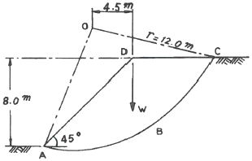
- 1.2
- 1.8
- 2.5
- 3.2
(정답률: 44%)
76. 다음 그림과 같이 피압수압을 받고 있는 2m두께의 모래층이 있다. 그 위의 포화된 점토층을 5m 깊이로 굴착하는 경우 분사현상이 발생하지 않기 위한 수심(h)은 최소 얼마를 초과하도록 하여야 하는가?
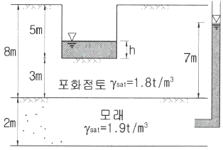
- 1.3m
- 1.6m
- 1.9m
- 2.4m
(정답률: 49%)
77. Meyerhof의 극한지지력 공식에서 사용하지 않는 계수는?
- 형상계수
- 깊이계수
- 시간계수
- 하중경사계수
(정답률: 46%)
78. 임경이 균일한 포화된 사질지반에 지진이나 진동 등 동적하중이 작용하면 지반에서는 일시적으로 전단강도를 상실하게 되는데, 이러한 현상을 무엇이라고 하는가?
- 분사현상(quock sand)
- 틱소트로피 현상(Thixotrpy)
- 히빙현상(heaving)
- 액상화현상(liquefaction)
(정답률: 47%)
79. 토질조사에 대한 설명 중 옳지 않은 것은?
- 사운딩(Sounding)이란 지중에 저항체를 삽입하여 토층의 성상을 파악하는 현장시험이다.
- 불교란 시료를 얻기 위해서 Foil Samplwe, Thin wall tube sampler 등이 사용된다.
- 표준관입시험은 로드(Rod)의 길이가 길어질수록 N치가 작게 나온다.
- 베인 시험은 정적인 사운딩이다.
(정답률: 56%)
80. 2.0kg/cm2의 구속응력을 가하여 시료를 완전히 압밀시킨 다음, 축차응력을 가하여 비배수 상태로 전단시켜 파괴시 축변형률 εf=10%, 축차응력 △σf=2.8kg/cm2, 간극수압 △uf=2.1kg/cm2를 얻었다. 파괴시 간극수압계수 A는? (단, 간극수압계수 B는 1.0으로 가정한다.)
- 0.44
- 0.75
- 1.33
- 2.27
(정답률: 30%)
평균값과 표준편차를 이용하여 배합강도를 구할 수 있다.
평균값 = 설계기준 압축강도 = 40MPa
표준편차 = 5MPa
정규분포에서 30회 이상의 시험실적으로부터 구한 압축강도의 표준편차를 나타내는 값은 표준오차이다.
표준오차 = 표준편차 / √n
여기서 n은 시험횟수이다.
n이 30회 이상이므로, 표준오차는 5 / √30 이다.
95% 신뢰수준에서의 신뢰구간은 평균값 ± 1.96 × 표준오차 이다.
따라서, 배합강도는 40 + 1.96 × (5 / √30) = 47.7MPa 이다.
따라서, 정답은 "47.7MPa" 이다.